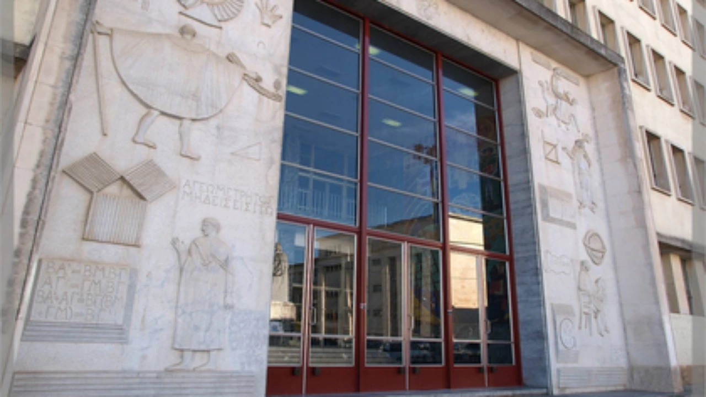

XVI PCS · 12–14 November 2026
Programme
All talks
Sala Pedro Nunes
Department of Mathematics, University of Coimbra.

All times are local to Coimbra (WET · UTC+0).
November 2026
Thursday, 12 November 2026
Afternoon
-
Lunch
Participants must make their own lunch arrangements · Places to eat nearby
-
–
Tim Van der Linden
Escaping families of continuous group actions
F.R.S.–FNRS; UCLouvain; Vrije Universiteit Brussel, Belgium
-
–
-
–
Idir Maguenine
Why Existence Splits: Prawitz's Ecumenical Logic and the Double-Negation Subtopos
Université Paris Cité, France
-
–
-
–
November 2026
Friday, 13 November 2026
Morning & afternoon
-
–
-
–
Diana Rodelo
How protomodular is your favourite category?
University of Algarve; CIDMA, University of Aveiro, Portugal
-
–
-
–
David Quiroga Gutiérrez
The center of an associative crossed module
University of Santiago de Compostela, Spain
-
–
Pouya Partow
Coalgebraic notions of simulation and bisimulation
University of Birmingham, United Kingdom
-
Lunch
Participants must make their own lunch arrangements · Places to eat nearby
-
–
Paolo Perrone
Descent in Probability Theory: the first steps downward
University of Oxford, United Kingdom
-
–
Rui Soares Barbosa
Sheaf representation of monoidal categories, revisited
INL – International Iberian Nanotechnology Laboratory, Portugal
-
–
-
–
Luzía Méndez Senra
Some categorical properties in terms of operads
CITMAga, University of Santiago de Compostela, Spain
-
–
Diogo Simm
Completing completions: the Karoubi envelope of the copower completion
Utrecht University, Netherlands
-
Group photo
After the final talk
November 2026
Saturday, 14 November 2026
Morning
-
–
Norihiro Yamada
On Graphical Freeness for Graded Linear Categories
CMUC, University of Coimbra, Portugal
-
–
-
–
-
–
Arnaud Duvieusart
Ternary semi-direct products in algebraically coherent categories
UCLouvain; F.R.S.–FNRS, Belgium
-
–
-
Lunch
For participants who opted in · Details below
Coffee breaks
All coffee breaks take place on the second floor of the Department of Mathematics, University of Coimbra.
14 November · After the morning session
Saturday lunch
Saturday lunch is reserved for participants who selected “Yes” for lunch when registering. Further information will be provided soon.
The lunch is paid for by participants.